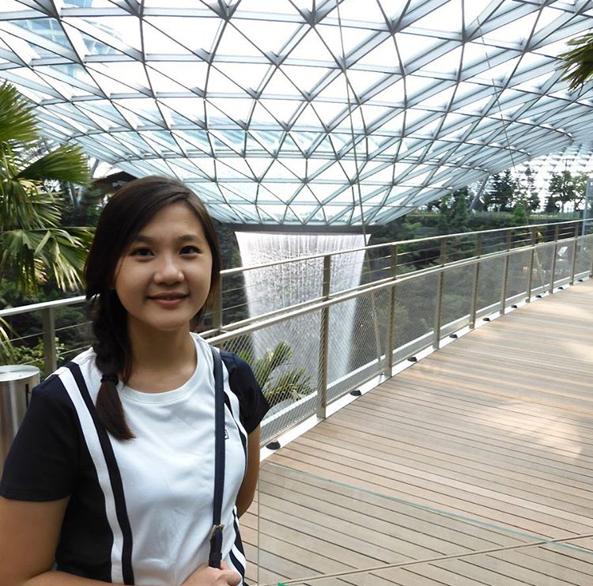

Family's Profile
Introduction
Laman situs ini akan bercerita sedikit tentang keluarga kecil di sebuah kota kecil di Indonesia, Pontianak. Keluarga ini terdiri dari 6 anggota; 2 orang tua dan 4 orang anak. Tidak ada yang spesial dari keluarga ini, namun kehidupan setiap individunya menarik dan unik.
Anak Pertama: Juliana

Nama : Juliana
Tanggal lahir : 10 November 1993
Usia : 27 tahun
Pekerjaan : Executive Trainer di suatu Learning Center di Jakarta
Anak Kedua: Dewi

Nama : Dewi
Tanggal lahir : 9 September 1995
Usia : 25 tahun
Pekerjaan : Senior Process Engineer di suatu perusahaan semiconductor
Anak Ketiga: Welly

Nama : Welly
Tanggal lahir : 12 April 1998
Usia : 22 tahun
Pekerjaan : Pengangguran
Anak Bungsu: Victor

Nama : Victor
Tanggal lahir : 14 December 2001
Usia : 19 tahun
Pekerjaan : Mahasiswa IT di salah satu universitas swasta